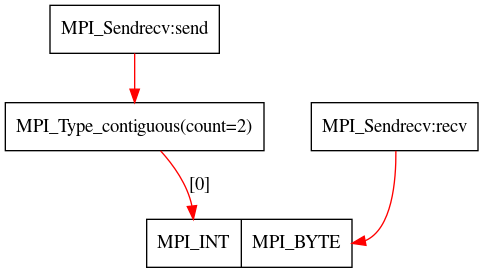

MUST Type Mismatch Details, date: Mon Nov 6 12:42:16 2023.
Back to MUST error report| Message | ||
| The application issued a set of MPI calls that mismatch in type signatures! The graph below shows details on this situation. The first differing item of each involved communication request is highlighted. | ||
| Datatype Graph | ||
|  | ||